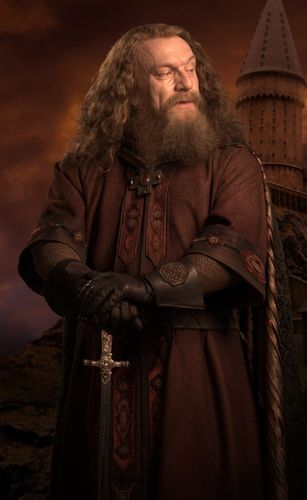

Notable Members

Godric Gryffindor
One of the four founders of Hogwarts School of Witchcraft and Wizardry.

Harry Potter
Was an English half-blood wizard, and one of the most famous wizards of modern times.

Albus Dumbledore
He was the Defence Against the Dark Arts Professor, later the Transfiguration Professor, and later the Headmaster of Hogwarts School of Witchcraft and Wizardry. He was considered to have been the greatest wizard of modern times, perhaps of all time.